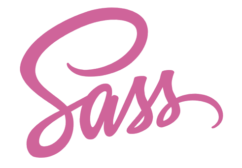
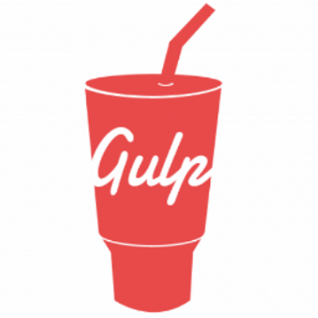

HTML
 HTML (от англ. HyperText Markup Language — «язык гипертекстовой разметки») — стандартизированный язык разметки документов во Всемирной паутине. Большинство веб-страниц содержат описание разметки на языке HTML (или XHTML).
HTML (от англ. HyperText Markup Language — «язык гипертекстовой разметки») — стандартизированный язык разметки документов во Всемирной паутине. Большинство веб-страниц содержат описание разметки на языке HTML (или XHTML).
Язык HTML был разработан британским учёным Тимом Бернерсом-Ли приблизительно в 1986—1991 годах в стенах ЦЕРНа в Женеве в Швейцарии. HTML создавался как язык для обмена научной и технической документацией, пригодный для использования людьми, не являющимися специалистами в области вёрстки. HTML успешно справлялся с проблемой сложности SGML путём определения небольшого набора структурных и семантических элементов — дескрипторов. Дескрипторы также часто называют «тегами». С помощью HTML можно легко создать относительно простой, но красиво оформленный документ. Помимо упрощения структуры документа, в HTML внесена поддержка гипертекста. Мультимедийные возможности были добавлены позже.
Изначально язык HTML был задуман и создан как средство структурирования и форматирования документов без их привязки к средствам воспроизведения (отображения). В идеале, текст с разметкой HTML должен был без стилистических и структурных искажений воспроизводиться на оборудовании с различной технической оснащённостью (цветной экран современного компьютера, монохромный экран органайзера, ограниченный по размерам экран мобильного телефона или устройства и программы голосового воспроизведения текстов). Однако современное применение HTML очень далеко от его изначальной задачи. Например, тег <table> предназначен для создания в документах таблиц, но иногда используется и для оформления размещения элементов на странице. С течением времени основная идея платформонезависимости языка HTML была принесена в жертву современным потребностям в мультимедийном и графическом оформлении.
Почему HTML?
- Классный
- Удобный
- Просто потому что
CSS
 CSS (англ. Cascading Style Sheets — каскадные таблицы стилей) — формальный язык описания внешнего вида документа, написанного с использованием языка разметки. Преимущественно используется как средство описания, оформления внешнего вида веб-страниц, написанных с помощью языков разметки HTML и XHTML, но может также применяться к любым XML-документам, например, к SVG или XUL.
CSS (англ. Cascading Style Sheets — каскадные таблицы стилей) — формальный язык описания внешнего вида документа, написанного с использованием языка разметки. Преимущественно используется как средство описания, оформления внешнего вида веб-страниц, написанных с помощью языков разметки HTML и XHTML, но может также применяться к любым XML-документам, например, к SVG или XUL.
CSS используется создателями веб-страниц для задания цветов, шрифтов, расположения отдельных блоков и других аспектов представления внешнего вида этих веб-страниц. Основной целью разработки CSS являлось разделение описания логической структуры веб-страницы (которое производится с помощью HTML или других языков разметки) от описания внешнего вида этой веб-страницы (которое теперь производится с помощью формального языка CSS). Такое разделение может увеличить доступность документа, предоставить большую гибкость и возможность управления его представлением, а также уменьшить сложность и повторяемость в структурном содержимом. Кроме того, CSS позволяет представлять один и тот же документ в различных стилях или методах вывода, таких как экранное представление, печатное представление, чтение голосом (специальным голосовым браузером или программой чтения с экрана), или при выводе устройствами, использующими шрифт Брайля.
Правила CSS пишутся на формальном языке CSS. Правила могут располагаться как в самом веб-документе, внешний вид которого они описывают, так и во внешних файлах, имеющих формат CSS. Формат CSS — это текстовый файл, в котором содержится перечень правил CSS и комментариев к ним.
Cтили CSS могут быть подключены или внедрены в описываемый ими веб-документ четырьмя способами:
- когда описание стилей находится в отдельном файле, оно может быть подключено к документу посредством элемента <link>, включенного в элемент <head>
- когда файл стилей размещается отдельно от родительского документа, он может быть подключен к документу инструкцией @import в элементе <style>
- когда стили описаны внутри документа, они могут быть включены в элемент <style>, который, включается в элеменет <head>
- когда стили описаны в теле документа, они могут располагаться в атрибутах отдельного элемента
JavaScript
 JavaScript (аббр. JS) — мультипарадигменный язык программирования. Поддерживает объектно-ориентированный, императивный и функциональный стили. Является реализацией языка ECMAScript (стандарт ECMA-262). JavaScript обычно используется как встраиваемый язык для программного доступа к объектам приложений. Наиболее широкое применение находит в браузерах как язык сценариев для придания интерактивности веб-страницам.
JavaScript (аббр. JS) — мультипарадигменный язык программирования. Поддерживает объектно-ориентированный, императивный и функциональный стили. Является реализацией языка ECMAScript (стандарт ECMA-262). JavaScript обычно используется как встраиваемый язык для программного доступа к объектам приложений. Наиболее широкое применение находит в браузерах как язык сценариев для придания интерактивности веб-страницам.
Большинство фреймворков автоматизированного тестирования (англ.) JavaScript-кода предполагают запуск тестов в браузере. Это осуществляется при помощи HTML-страницы, являющейся контекстом тестирования (англ.), которая, в свою очередь загружает всё необходимое для осуществления тестирования. Первыми такими фреймворками были JsUnit (англ.) (создан в 2001 году), Selenium (создан в 2004 году). Альтернатива — запуск тестов из командной строки. В этом случае используются окружения, отличные от браузера, например, Rhino. Одним из первых инструментов такого рода является Crosscheck, позволяющий тестировать код, эмулируя поведение Internet Explorer 6 и Firefox версий 1.0 и 1.5. Другой пример фреймворка автоматизированного тестирования JavaScript-кода, не использующего браузер для запуска тестов — библиотека env.js, созданная Джоном Резигом. Она использует Rhino и при этом содержит эмуляцию окружения браузера и DOM. Blue Ridge, плагин к фреймворку веб-приложений Ruby on Rails, позволяет осуществлять модульное тестирование JavaScript-кода как в браузере, так и вне его. Это достигается за счёт использования фреймворка автоматизированного тестирования Screw.Unit и Rhino с env.js.
Главная проблема систем тестирования, не использующих браузеры, в том, что они используют эмуляции, а не реальные окружения, в которых выполняется код. Это приводит к тому, что успешное прохождение тестов не гарантирует того, что код корректно отработает в браузере. Проблемой систем тестирования, использующих браузер, является сложность работы с ними, необходимость осуществления рутинных неавтоматизированных действий. Для решения этого JsTestDriver, фреймворк автоматизированного тестирования, разрабатываемый Google, использует сервер, взаимодействующий с браузерами для осуществления тестирования. Сходным образом ведёт себя Selenium Remote Control, входящий во фреймворк автоматизированного тестирования Selenium: он включает в себя сервер, запускающий и завершающий браузеры и действующий как HTTP-прокси для запросов к ним. Кроме того, в Selenium содержится Selenium Grid, позволяющий осуществлять одновременное тестирование JavaScript-кода на разных компьютерах с разными окружениями, уменьшая время выполнения тестов. Testswarm, имеющее поддержку фреймворков автоматизированного тестирования JavaScript-кода QUnit (библиотека jQuery), UnitTestJS (библиотека Prototype), JSSpec (библиотека MooTools), JsUnit, Selenium и Dojo Objective Harness, представляет собой распределённое средство поддержки непрерывной интеграции.
Негативное свойство, которым может обладать фреймворк автоматизированного тестирования JavaScript-кода — наличие зависимостей. Это создаёт риск отказа в работе тестируемого кода, успешно проходящего тесты, в среде с отсутствием этих зависимостей. Например, исходная версия JsUnitTest, фреймворка, созданного и использовавшегося для тестирования библиотеки Prototype, зависела от самой Prototype, изменяющего свойства объектов в глобальной области видимости. Включение в библиотеку JavaScript инструмента тестирования — распространённая практика. Так YUI Test 3 является частью Yahoo! UI Library и может быть безопасно использован для тестирования произвольного JavaScript-кода. QUnit — фреймворк автоматизированного тестирования, созданный разработчиками jQuery.
В JavaScript:
- все идентификаторы регистрозависимы,
- в названиях переменных можно использовать буквы, подчёркивание, символ доллара, арабские цифры,
- названия переменных не могут начинаться с цифры,
- для оформления однострочных комментариев используются //, многострочные и внутристрочные комментарии начинаются с /* и заканчиваются */
React.js
 React (иногда React.js или ReactJS) — JavaScript-библиотека с открытым исходным кодом для разработки пользовательских интерфейсов.
React (иногда React.js или ReactJS) — JavaScript-библиотека с открытым исходным кодом для разработки пользовательских интерфейсов.
React может использоваться для разработки одностраничных и мобильных приложений. Его цель — предоставить высокую скорость, простоту и масштабируемость. В качестве библиотеки для разработки пользовательских интерфейсов React часто используется с другими библиотеками, такими как Redux.
Методы жизненного цикла позволяют разработчику запускать код на разных стадиях жизненного цикла компонента. Например:
- shouldComponentUpdate — позволяет предотвратить перерисовку компонента с помощью возврата false, если перерисовка не необходима.
- componentDidMount — вызывается после первой отрисовки компонента. Он часто используется для запуска получения данных с удаленного источника через API.
- render — является важнейшим методом жизненного цикла. Каждый компонент должен иметь этот метод. Обычно этот метод вызывается при изменении данных компонента для перерисовки данных в интерфейсе.
AngularJS
 AngularJS — JavaScript-фреймворк с открытым исходным кодом. Предназначен для разработки одностраничных приложений. Его цель — расширение браузерных приложений на основе MVC-шаблона, а также упрощение тестирования и разработки.
AngularJS — JavaScript-фреймворк с открытым исходным кодом. Предназначен для разработки одностраничных приложений. Его цель — расширение браузерных приложений на основе MVC-шаблона, а также упрощение тестирования и разработки.
Фреймворк работает с HTML, содержащим дополнительные пользовательские атрибуты, которые описываются директивами, и связывает ввод или вывод области страницы с моделью, представляющей собой обычные переменные JavaScript. Значения этих переменных задаются вручную или извлекаются из статических или динамических JSON-данных.
AngularJS разработан в 2009 году Мишко Хевери и Адамом Абронсом в Brat Tech LLC как программное обеспечение позади сервиса хранения JSON-данных, измеряющихся мегабайтами, для облегчения разработки корпоративных приложений. Сервис располагался на домене «GetAngular.com» и имел нескольких зарегистрированных пользователей, прежде чем они решили отказаться от идеи бизнеса и выпустить Angular как библиотеку с открытым исходным кодом.
Цели разработки:
- Отделение DOM-манипуляции от логики приложения, что улучшает тестируемость кода.
- Отношение к тестированию как к важной части разработки. Сложность тестирования напрямую зависит от структурированности кода.
- Разделение клиентской и серверной стороны, что позволяет вести разработку параллельно.
- Проведение разработчика через весь путь создания приложения: от проектирования пользовательского интерфейса, через написание бизнес-логики, к тестированию.
LESS
 LESS — это динамический язык стилей, который разработал Alexis Sellier. Он создан под влиянием языка стилей Sass, и, в свою очередь, оказал влияние на его новый синтаксис «SCSS», в котором также использован синтаксис, являющийся расширением СSS.
LESS — это динамический язык стилей, который разработал Alexis Sellier. Он создан под влиянием языка стилей Sass, и, в свою очередь, оказал влияние на его новый синтаксис «SCSS», в котором также использован синтаксис, являющийся расширением СSS.
LESS — это продукт с открытым исходным кодом. Его первая версия была написана на Ruby, однако в последующих версиях было решено отказаться от использования этого языка программирования в пользу JavaScript. Less — это вложенный метаязык: валидный CSS будет валидной less-программой с аналогичной семантикой.
LESS может работать на стороне клиента (Internet Explorer 6+, WebKit, Firefox) или на стороне сервера под управлением Node.js или Rhino.
Less позволяет использовать переменные. Имя переменной предваряется символом @. В качестве знака присваивания используется двоеточие (:).
LESS обеспечивает следующие расширения CSS:
- переменные
- вложенные
- блоки
- миксины
- операторы
- функции
SASS
 Sass (Syntactically Awesome Stylesheets) — модуль, включенный в Haml. Sass — это метаязык на основе CSS, предназначенный для увеличения уровня абстракции CSS кода и упрощения файлов каскадных таблиц стилей.
Одна из ключевых особенностей Sass — вложенные правила, которые облегчают процесс создания и редактирования вложенных селекторов.
Sass добавляет к CSS константы и примеси. Это облегчает поддержку целостности данных внутри большого набора стилей. Константы позволяют установить значение и использовать его внутри стилей, с помощью примесей то же самое можно сделать с блоком атрибутов стиля.
Язык Sass имеет два синтаксиса:
- SASS — отличается отсутствием фигурных скобок, в нём вложенные элементы реализованы с помощью отступов;
- SCSS (Sassy CSS) — использует фигурные скобки, как и сам CSS.
PostCSS
 PostCSS — программа, которая автоматизирует рутинные операции с CSS с помощью расширений, написанных на языке JavaScript. Используется при разработке Википедии, Facebook и GitHub. Один из самых часто загружаемых с npm инструментов для работы с CSS. Разработана Андреем Ситником в компании «Злые марсиане».
PostCSS — программа, которая автоматизирует рутинные операции с CSS с помощью расширений, написанных на языке JavaScript. Используется при разработке Википедии, Facebook и GitHub. Один из самых часто загружаемых с npm инструментов для работы с CSS. Разработана Андреем Ситником в компании «Злые марсиане».
В отличие от Sass и LESS, PostCSS не является языком шаблонов, компилируемых в CSS. PostCSS — платформа, на которой можно создать разные инструменты работы CSS. В частности, на PostCSS можно создать и язык шаблонов, такой как Sass и LESS.
Все полезные функции предоставляются расширениями — небольшими программами, которые работают с деревом объектов. После того, как ядро преобразует CSS-строку в дерево объектов, расширения по очереди анализируют и изменяют это дерево. Затем ядро PostCSS генерирует новую CSS-строку по дереву, которое было изменено расширениями.
Ядро PostCSS состоит из:
- парсера CSS, который генерирует дерево объектов (AST) из строки CSS-кода;
- набора классов, из которого состоит это дерево;
- генератора CSS, который генерирует строку CSS по дереву объектов;
- генератора карт кода для сделанных в CSS изменений.
TypeScript
 TypeScript — язык программирования, представленный Microsoft в 2012 году и позиционируемый как средство разработки веб-приложений, расширяющее возможности JavaScript.
TypeScript — язык программирования, представленный Microsoft в 2012 году и позиционируемый как средство разработки веб-приложений, расширяющее возможности JavaScript.
Разработчиком языка TypeScript является Андерс Хейлсберг (англ. Anders Hejlsberg), создавший ранее Turbo Pascal, Delphi и C#.
TypeScript является обратно совместимым с JavaScript и компилируется в последний. Фактически, после компиляции программу на TypeScript можно выполнять в любом современном браузере или использовать совместно с серверной платформой Node.js. Код экспериментального компилятора, транслирующего TypeScript в JavaScript, распространяется под лицензией Apache. Его разработка ведётся в публичном репозитории через сервис GitHub.
Особенности TypeScript:
- TypeScript поддерживает ECMAScript 6 классы что позволяет поддерживать опцию объявления типов.
- TypeScript поддерживает обобщённое программирование.
- Концепция файлов декларации аналогична таковой в заголовочных файлах в C++.
AJAX
 AJAX, Ajax (от англ. Asynchronous Javascript and XML — «асинхронный JavaScript и XML») — подход к построению интерактивных пользовательских интерфейсов веб-приложений, заключающийся в «фоновом» обмене данными браузера с веб-сервером. В результате, при обновлении данных веб-страница не перезагружается полностью, и веб-приложения становятся быстрее и удобнее. По-русски иногда произносится транслитом как «аякс» (по аналогии с мифологическим именем), но у аббревиатуры AJAX нет устоявшегося аналога на кириллице.
AJAX, Ajax (от англ. Asynchronous Javascript and XML — «асинхронный JavaScript и XML») — подход к построению интерактивных пользовательских интерфейсов веб-приложений, заключающийся в «фоновом» обмене данными браузера с веб-сервером. В результате, при обновлении данных веб-страница не перезагружается полностью, и веб-приложения становятся быстрее и удобнее. По-русски иногда произносится транслитом как «аякс» (по аналогии с мифологическим именем), но у аббревиатуры AJAX нет устоявшегося аналога на кириллице.
Действия с интерфейсом преобразуются в операции с элементами DOM (англ. Document Object Model), с помощью которых обрабатываются данные, доступные пользователю, в результате чего представление их изменяется. Здесь же производится обработка перемещений и щелчков мышью, а также нажатий клавиш. Каскадные таблицы стилей, или CSS (англ. Cascading Style Sheets), обеспечивают согласованный внешний вид элементов приложения и упрощают обращение к DOM-объектам. Объект XMLHttpRequest (или подобные механизмы) используется для асинхронного взаимодействия с сервером, обработки запросов пользователя и загрузки в процессе работы необходимых данных.
Три из этих четырёх технологий — CSS, DOM и JavaScript — составляют DHTML (англ. Dynamic HTML). По мнению некоторых специалистов средства DHTML, появившиеся в 1997 году, подавали большие надежды, но так и не оправдали их.
При использовании AJAX:
- Пользователь заходит на веб-страницу и нажимает на какой-нибудь её элемент.
- Скрипт (на языке JavaScript) определяет, какая информация необходима для обновления страницы.
- Браузер отправляет соответствующий запрос на сервер.
- Сервер возвращает только ту часть документа, на которую пришёл запрос.
- Скрипт вносит изменения с учётом полученной информации (без полной перезагрузки страницы).
Webpack
 Webpack считается лучшим инструментом для сборки приложений на React и Redux. Полагаю, многие из тех, кто сегодня использует Angular 2 и другие фреймворки, не обходят вниманием и Webpack. И поскольку начинать работу с данным инструментом всегда непросто, я решил посвятить этой теме несколько публикаций в надежде облегчить старт другим разработчикам и заодно продемонстрировать некоторые особенности Webpack.
Webpack считается лучшим инструментом для сборки приложений на React и Redux. Полагаю, многие из тех, кто сегодня использует Angular 2 и другие фреймворки, не обходят вниманием и Webpack. И поскольку начинать работу с данным инструментом всегда непросто, я решил посвятить этой теме несколько публикаций в надежде облегчить старт другим разработчикам и заодно продемонстрировать некоторые особенности Webpack.
Когда я впервые увидел его файл конфигурации, он показался мне крайне странным и путанным. Но спустя некоторое время я понял, что всё дело в уникальном синтаксисе Webpack и несколько иной философии, которая может поначалу немного сбить с толку. Но, с другой стороны, именно эта новая философия и делает Webpack таким популярным.
Большинство проектов используют так много функций, что у них, как правило, есть 2 больших файла конфигурации Webpack.
Можно выделить 2 основных принципа философии Webpack:
- Что угодно может быть модулем. Модулями могут быть как JS-файлы, так и CSS-файлы, HTML-файлы или изображения. То есть можно использовать и require(“myJSfile.js”), и require(“myCSSfile.css”). Таким образом, вы можете разбивать любой артефакт на меньшие удобоуправляемые части, использовать их повторно и так далее.
- Загружайте только то, что вам нужно и когда вам нужно. Обычно сборщики модулей берут все модули и генерируют из них один большой файл bundle.js. Но во многих приложениях размер такого файла может достигать 10–15 MB – а это слишком много. Потому Webpack оснащен рядом функций, позволяющих делить код и генерировать множество bundle-файлов, а также асинхронно загружать необходимые части приложения тогда, когда это нужно.
Gulp
 Webpack считается лучшим инструментом для сборки приложений на React и Redux. Полагаю, многие из тех, кто сегодня использует Angular 2 и другие фреймворки, не обходят вниманием и Webpack. И поскольку начинать работу с данным инструментом всегда непросто, я решил посвятить этой теме несколько публикаций в надежде облегчить старт другим разработчикам и заодно продемонстрировать некоторые особенности Webpack.
Когда я впервые увидел его файл конфигурации, он показался мне крайне странным и путанным. Но спустя некоторое время я понял, что всё дело в уникальном синтаксисе Webpack и несколько иной философии, которая может поначалу немного сбить с толку. Но, с другой стороны, именно эта новая философия и делает Webpack таким популярным.
Большинство проектов используют так много функций, что у них, как правило, есть 2 больших файла конфигурации Webpack.
Можно выделить 2 основных принципа философии Webpack:
- Что угодно может быть модулем. Модулями могут быть как JS-файлы, так и CSS-файлы, HTML-файлы или изображения. То есть можно использовать и require(“myJSfile.js”), и require(“myCSSfile.css”). Таким образом, вы можете разбивать любой артефакт на меньшие удобоуправляемые части, использовать их повторно и так далее.
- Загружайте только то, что вам нужно и когда вам нужно. Обычно сборщики модулей берут все модули и генерируют из них один большой файл bundle.js. Но во многих приложениях размер такого файла может достигать 10–15 MB – а это слишком много. Потому Webpack оснащен рядом функций, позволяющих делить код и генерировать множество bundle-файлов, а также асинхронно загружать необходимые части приложения тогда, когда это нужно.